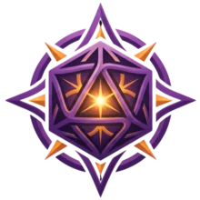
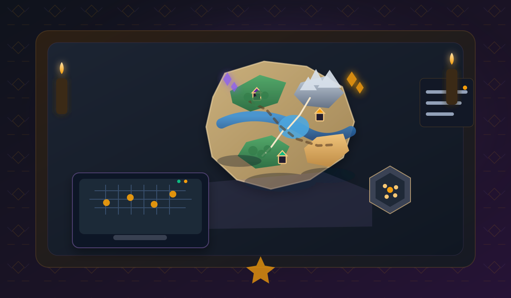

Aprendiz
Grátis
R$ 0/mês
- 1 campanha ativa
- Gerador de mapas básico
- Até 20 PNJs
- Rolador de dados completo

Trama MestraO Nexo da Sua Campanha RPG
Deixe a papelada para os goblins. O Nexus é o software definitivo que transforma as anotações caóticas do Mestre em um universo vivo e inesquecível em minutos.
Clique em um dado para testar sua sorte.

A TramaMestra nao nasceu em um escritorio corporativo. Ela nasceu as 3 da manha, depois que nosso Mestre perdeu 15 minutos procurando o nome de um estalajadeiro num caderno. Criamos o Nexus porque precisavamos dele. Queriamos focar em reviravoltas epicas, nao em burocracia.
Arsenal do Mestre
Recursos detalhados para cada momento da mesa, da prep épica ao combate frenético.
Chega de anotações perdidas. O Nexus cria hiperlinks automáticos entre NPCs, cidades e itens. Sua campanha vira uma teia organizada.
Seus jogadores fazem uma pergunta inesperada? Nossa busca ultrarrápida traz a lore em milissegundos. O jogo nunca mais vai parar.
Reduza seu tempo de preparação. Com geradores integrados e templates, o sistema faz o trabalho duro. Você foca apenas em imaginar a aventura.
De uma pequena vila a um multiverso. Mapas interativos com pinos garantem controle total, não importa o tamanho da sua história.
Cada decisao importante vira registro vivo. No fim da sessao, seu grupo recebe um resumo narrativo pronto para continuar no proximo encontro.
Gere combates com desafio certo para o nivel do grupo em segundos. O motor ajusta inimigos, objetivos e ritmo para manter a tensao ideal.
Dados com modificadores e registro por sessao. Revise cada jogada importante com transparencia total para o grupo.
Mestre e jogadores acompanham elementos permitidos em tempo real. A mesa inteira joga com a mesma base de informacao viva.
Campanha Viva
O activity feed registra descobertas, batalhas e decisões para criar uma crônica automática da sua mesa.
Arquiteto de Mundos
Do aprendiz ao mestre lendário, escolha o plano que respeita a épica da sua campanha.
Aprendiz
R$ 0/mês
Mais Popular
Nexus
R$ 29/mês
Lendário
R$ 69/mês
A maioria dos mestres percebe ganho de organizacao ja na primeira sessao com o Nexus. Em poucas campanhas, o tempo de preparo tende a cair bastante.
Nao. A estrutura e guiada para mestres de todos os niveis, com fluxos simples para criar NPCs, locais, eventos e ganchos.
Sim. O Nexus foi pensado para escalar junto da narrativa, com conexoes entre elementos para manter o controle da lore.
Sim. A busca rapida e os vinculos entre personagens, itens e regioes ajudam a recuperar informacao em segundos.
Pode. Voce pode iniciar com um fluxo de entrada leve para validar se o Nexus encaixa no seu estilo de mestrar.
Se voce chegou ate aqui, sua mesa merece um sistema a altura da sua historia. Traga ordem ao caos e ganhe tempo para narrar melhor.
Converse com nosso time e descubra como montar seu grimorio vivo de campanha sem burocracia.
Quero comecar agoraResposta rapida para mestres que querem acelerar a proxima sessao.